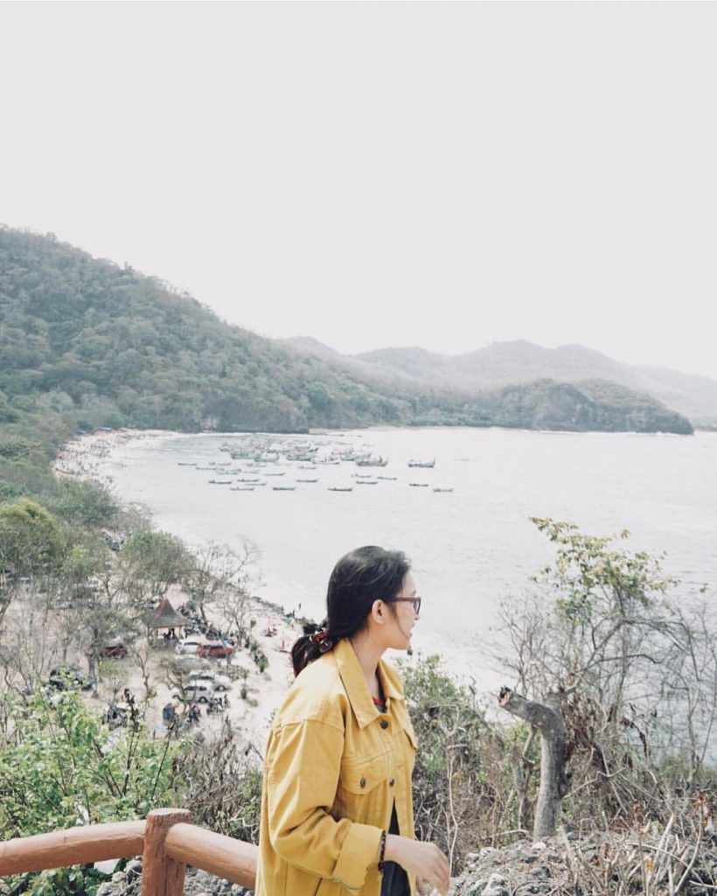

Tempat Wisata Di Jember
Pantai Papuma
Wisata pantai Jember yang pertama ini merupakan destinasi wisata yang cukup populer di Jember. Mempunyai keindahan panorama dan alam pantai yang sangat mempesona. Pantai papuma mempunyai pasir putih dan bersih. wisata ini berada di Desa Lojejer, Kec Wuluhan. Dari Kota Jember berjarak sekitar 45 Km. Di sekitar wisata papupama juga banyak penginapan. Selain itu ada juga spot lain seperti Goa Lawa yang harus anda kunjungi bila berlibur di pantai ini.
Pantai Payangan
Tahukah anda bahwa tempat ini merupakan sebuah lokasi yang belum terjamah banyak wisatawan. Pantai unik tak berpasir tetapi menawarkan keindahan yang menakjubkan. Pemandangan pantai dengan bukit-bukit tinggi di bibir pantai. Unik bukan? Mengingatkan indahnya panati Mawun yang ada di Lombok.
Pantai payangan di jember cocok untuk anda yang suka eksplore pantai-pantai indah. Di pantai ini kita juga bisa melihat aktivitas Nelayan yang sibuk dengan aktivitas mereka.
Pantai Watu Ulo
Pantai yang ada di jember selanjutnya ini mempunyai pemandangan yang sangat eksotik. Patnai Watu Ulo namanya, lokasinya yang berdekatan dengan pantai papuma membuat wisata ini juga harus anda kunjungi.
Di sekitar pantai Watu Ulo terdapat banyak penjual aksesoris dari laut. Anda bisa membeli hasil kerajinan tersebut untuk buah tangan saat anda berkunjung ke jember.
Pada tanggal 1-10 Syawal setiap tahunnya tempat ini juga di mengadakan Pekan raya. Dengan pemandangan alam yang mempesona, anda pasti akan betah berlama-lama menikmati indahnya alam di tempat ini